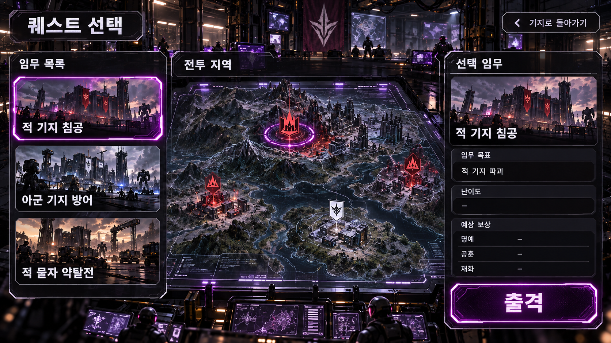
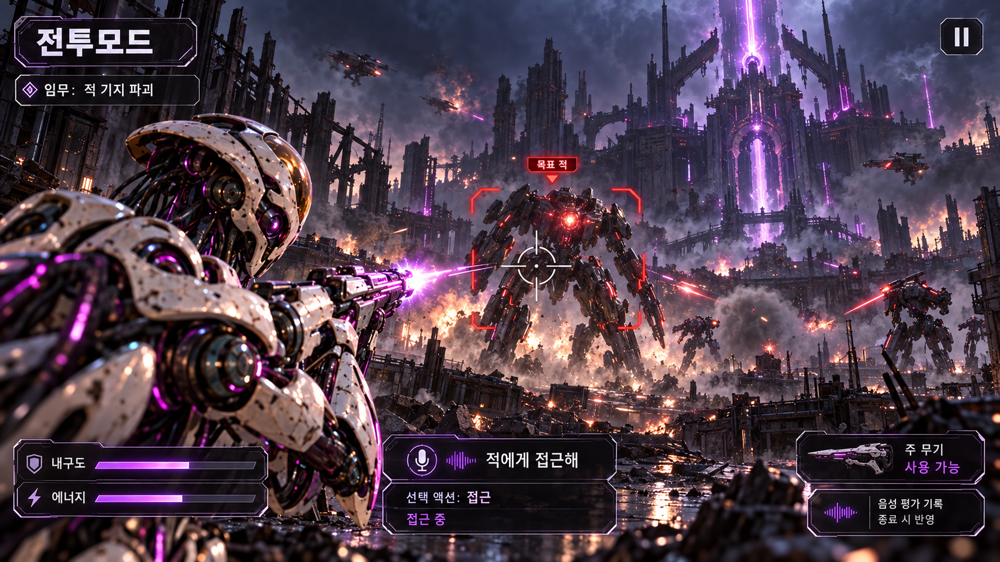
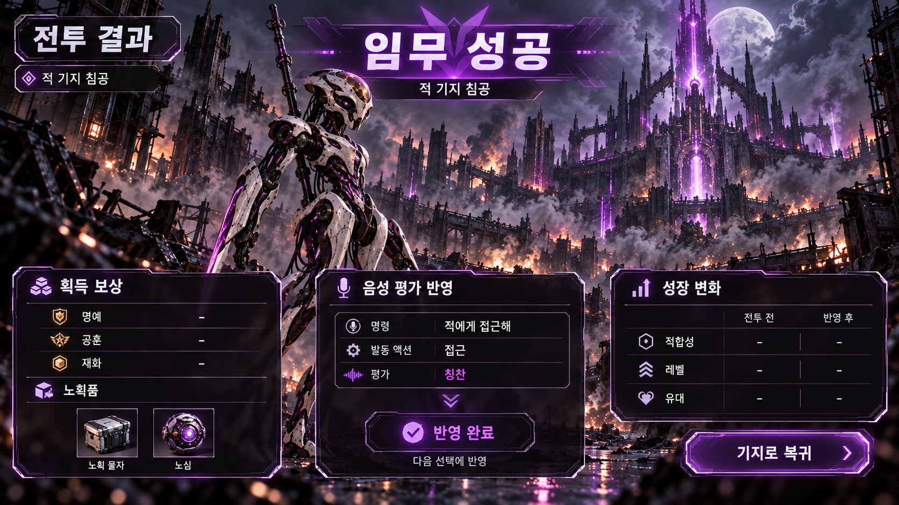

SCENE 05–07 / 퀘스트 선택 · 전투 스테이지 · 전투 결과
싸우며 지구와 로봇을 되찾는다
로비에서 전투모드로 진입해 임무를 고르고, 직접 조준 공격과 음성 이동으로 전투를 수행한 뒤 결과 화면에서 보상과 평가 반영을 확인한다.
아군 기지 방어
적 물자 약탈전
명시적 보상
전투의 성과
명예, 공훈, 재화와 노획품을 보상으로 얻는다. 어떤 보상을 얼마나 주는지는 퀘스트의 성격에 따라 달라지며, 전투 성공 시에만 지급한다(실패·중도 포기 시 제외).
암시적 보상
서로 잘 통하는 동료
전투 중 카운팅된 음성 평가를 전투 종료(성공·실패·중도 포기 모두 포함) 시 결과 씬에서 일괄 반영해 액션 선택 확률과 적합성, 레벨, 유대를 조정한다. 성장에 따라 한 번의 발화에서 연속으로 처리할 수 있는 이동 명령의 수가 늘어난다.
화면 04 / 퀘스트 선택 씬
임무를 고르고 목표와 보상을 확인해 출격한다

01 / 임무 선택목록과 지도에서 임무를 고른다
02 / 목표 확인선택한 임무의 전투 목적을 확인한다
03 / 조건 확인난이도와 예상 보상을 살핀다
04 / 출격선택한 전투 스테이지에 진입한다
확정 진입 흐름: 로비 · 기지 → 퀘스트 선택 씬 → 전투 스테이지 씬. 출격 전에 기지(로비)로 돌아갈 수 있다.
화면 05 / 전투모드 스테이지 씬
공격은 직접 조준하고, 이동은 말로 지시한다

01 / 직접 공격중앙 조준으로 겨냥하고 공격한다
02 / 음성 이동명령을 말하고 선택 액션을 확인한다
03 / 평가 카운팅칭찬·비난을 직전 명령(연속 묶음 전체)에 카운팅한다
04 / 종료 후 결과 씬성공·실패·중도 포기 모두 전투 결과 씬으로 이동한다
화면 06 / 전투 결과 씬
전투의 성과와 함께 쌓은 성장을 확인한다

01 / 전투 결과임무 성공·실패·중도 포기를 확인한다
02 / 보상성공 시에만 명예·공훈·재화와 노획품을 지급한다
03 / 평가·성장성공·실패·중도 포기 모두 누적 카운팅된 평가를 일괄 반영한다
04 / 복귀기지로 돌아가 다음 활동을 고른다
확정 규칙: 전투 성공·실패뿐 아니라 중도 포기(퇴각) 시에도 반드시 전투 결과 씬을 거친 뒤 로비로 복귀한다. 실패 및 중도 포기 시에는 명시적 보상만 제외하며, 전투 중 그때까지 카운팅된 음성 평가는 모두 결과 씬에서 일괄 적용한다(반영 폭 및 밸런스는 성장 계산식으로 제어). 퀘스트 선택 브리핑·전황 중계·결과 정산 안내는 2등신 홀로그램 메카 백호 마스코트인 작전 오퍼레이터 ‘홀랑이’가 전담한다.